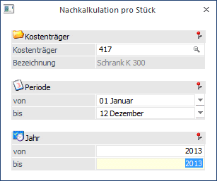
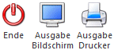
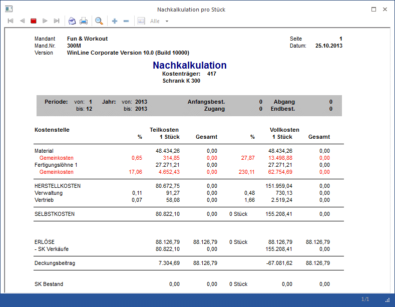

Die Nachkalkulation pro Stück finden Sie im Menüpunkt
1 Auswertungen
1 Nachkalkulation pro Stück.
Hier werden die Anfangsbestände und die Bestandsveränderung (aus der FAKT) in die Nachkalkulation mit einbezogen. Voraussetzung dafür ist eine Verknüpfung des Kostenträgers mit dem Artikelstamm (siehe Lager-Fenster im Artikelstamm). Ziel der Auswertung ist es, die Kosten und Erlöse pro Stück zu errechnen, d.h. es wird die Summe der Kosten durch die Anzahl der produzierten Stück dividiert, um auf die Kosten pro Stück zu kommen. Damit ist es dann möglich, die Anzahl der verkauften Stück mit den Kosten der verkauften Stück gegenüberzustellen, um den Gewinn pro Stück darzustellen.

Buttons

Ø Ende
Das Fenster wird geschlossen.
Ø Ausgabe Bildschirm
Die Auswertung kann entweder über den Drucker oder den Bildschirm erfolgen.
Selektionskriterien
Ø Kostenträger
Mit Hilfe des Matchcodes können Sie den entsprechenden Kostenträger auswählen. Dabei wird geprüft, ob der Benutzer die Berechtigung hat (WinLine KORE/Stammdaten/Kostenträger), den eingegebenen Kostenträger zu verwenden.
Ø Periode von - bis
Weiters können Sie auch nach Perioden selektieren.
Ø Jahr von - bis
Bei abweichenden Wirtschaftsjahren können Sie auch das Jahr selektieren.
Beispiel
Aufgrund der Anfangsbestände (manuelle Eingabemöglichkeit im Kostenträgerstamm), Zugänge, Abgänge (Übernahme aus der FAKT) und Endbestand erhalten Sie eine Kalkulation pro Stück.

Erläuterung
Insgesamt sind für den Kostenträger Vollkosten von 51.656,58 (davon zu Teilkosten: 41.807,63) angefallen.
Produziert (lt. Artikelstamminformation der Auftragsbearbeitung) wurden 130 Stück.
Damit ergeben sich Stückkosten zu Vollkosten von 397,38 sowie zu Teilkosten von 321,59.
Verkauft wurden von dem Produkt (lt. Auftragsbearbeitung) 123 Stück. Bei Erlösen von 82.363,16 für den Kostenträger ergibt sich damit ein Erlös pro Stück von 669,62.
Wenn man nun die Kosten, die diese 123 Stück im Betrieb verursacht haben abzieht, bleiben ein Deckungsbeitrag pro Stück von 348,03 zu Teilkosten und ein Reingewinn von 272,24 (zu Vollkosten).
Der verbleibende Bestand von 7 Stück (Anfangsbestand lt. Kostenträgerstamm + produzierte Stück aus der Auftragsbearbeitung - verkaufte Stück lt. Auftragsbearbeitung) ergibt damit einen Wert von 2.781,51 zu Vollkosten und 2.251,18 zu Teilkosten.